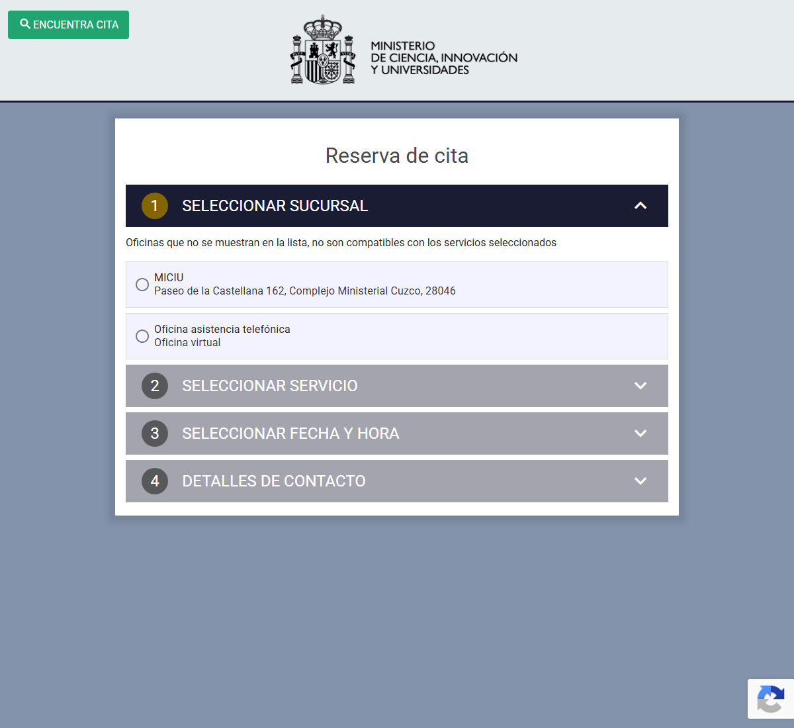
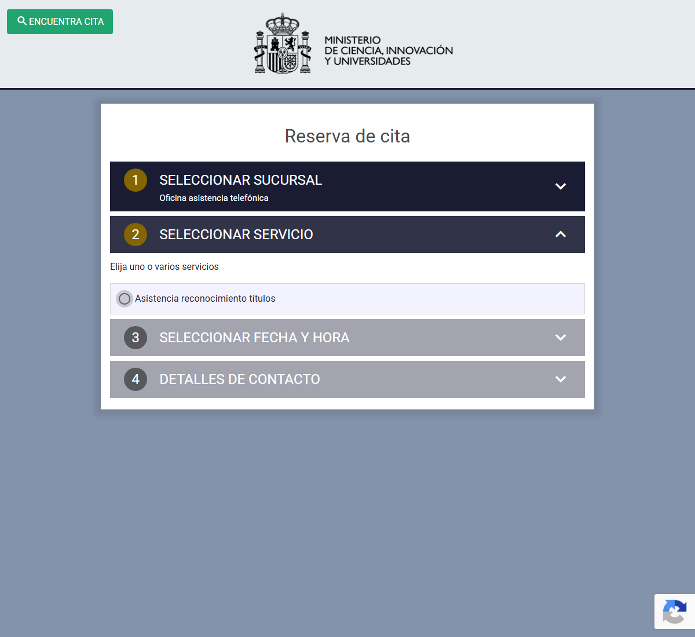
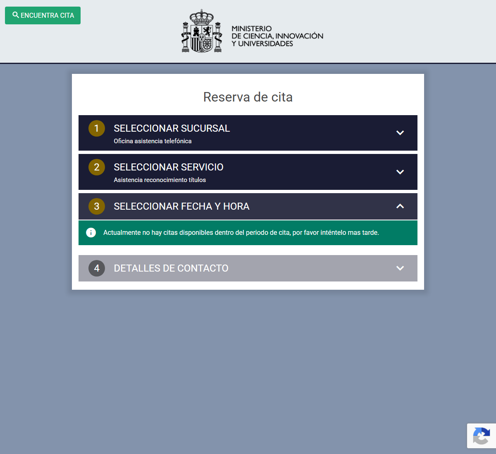
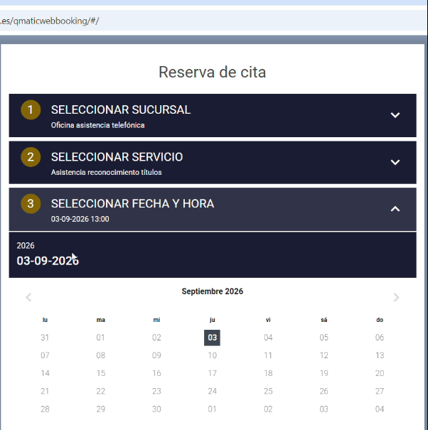
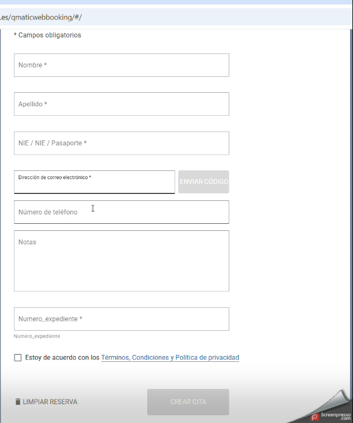

Importante: las capturas del calendario son ejemplos del vídeo; sus fechas ya pasaron. Comprueba siempre las fechas y horas que muestre el portal al hacer tu solicitud.
Haz esto, paso a paso
-
Entra en el portal
Abre citaprevia.ciencia.gob.es. -
Elige la oficina
Pulsa Oficina asistencia telefónica (Oficina virtual).
Selecciona la segunda opción. -
Elige el servicio
Marca Asistencia reconocimiento títulos.
Selecciona esta opción para el trámite. -
Si no hay citas, vuelve a intentarlo más tarde
Si aparece este aviso, no hay fechas para elegir ahora. Vuelve a consultar el portal más tarde.
Este es el aviso que aparece cuando no hay citas disponibles. -
Cuando aparezcan citas, selecciona una fecha
En el calendario, pulsa un día disponible. La fecha elegida quedará resaltada.
Ejemplo del vídeo: el 3 de septiembre aparece seleccionado. Esa fecha ya pasó; elige una fecha futura disponible en tu consulta. -
Selecciona una hora
Bajo el calendario, pulsa uno de los horarios disponibles.Ejemplo del vídeo: pulsa el botón de hora disponible. En este ejemplo era 13:00; las horas reales pueden ser distintas. -
Rellena el formulario
Escribe nombre, apellidos, NIE/NIF/pasaporte, correo, teléfono y número de expediente. «Notas» es opcional.
Rellena los campos marcados con asterisco. -
Verifica el correo y crea la cita
Pulsa . Busca el código en tu correo, introdúcelo y pulsa . Marca la casilla de términos y privacidad; revisa todo y pulsa . -
Guarda la confirmación
Espera el mensaje final del portal y guarda el justificante. Elegir fecha y hora no confirma por sí solo la cita.
Vídeo completo del proceso
El vídeo es un ejemplo grabado; las fechas y horas que muestra no son disponibilidad actual.